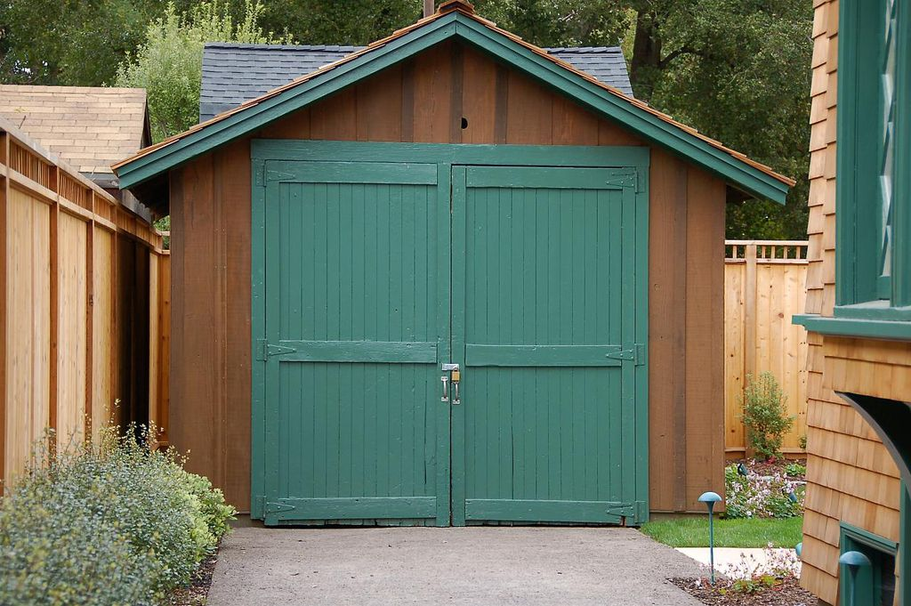

Quem somos?
Best4U nasceu no ano de 1999 nos fundos de uma garagem com um objetivo uno: a transformação digital a partir de softwares especializados.
Desde então, a Best4U vem prestando serviços para diversas empresas de setores diversificados, com ênfase em pequenas e médias empresas.


A partir do ano de 2008 a Best4U começa uma nova fase, entrando no mercado contábil
e no mercado de Artificial Intelligence (AI).
Fechando contratos com empresas internacionais de grande reputação.